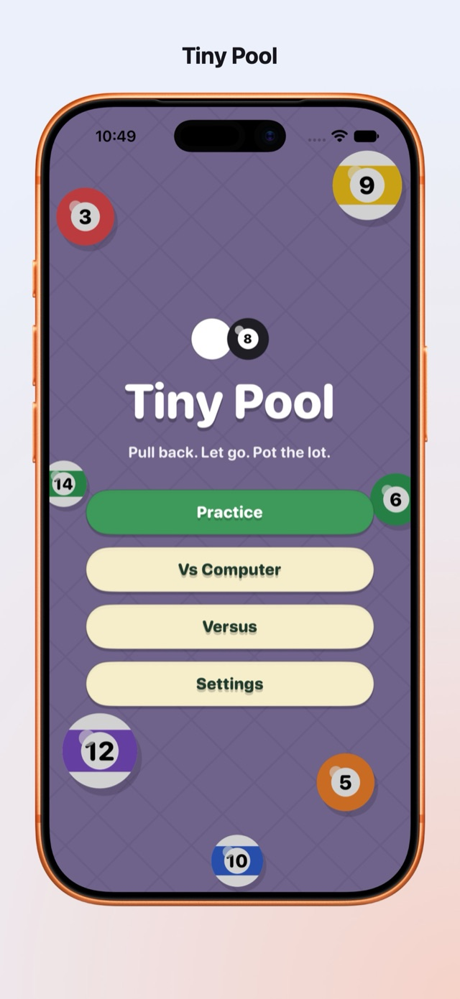
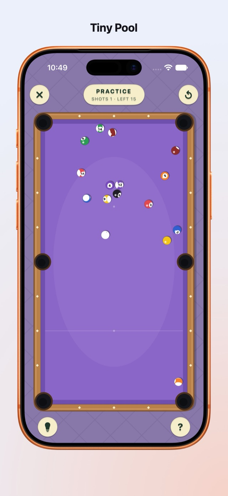
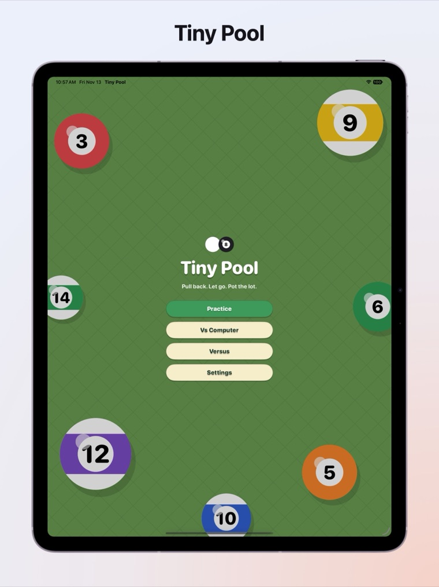
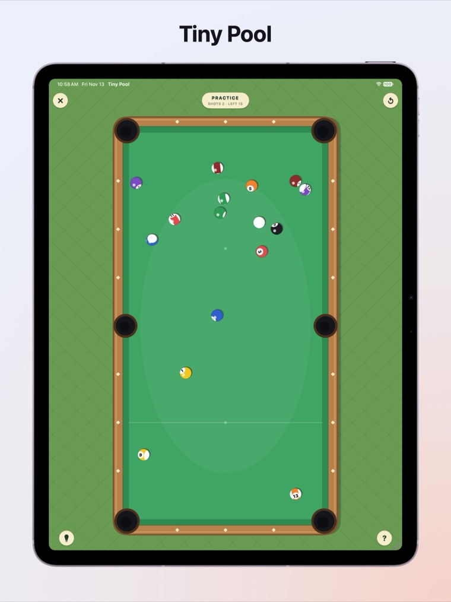
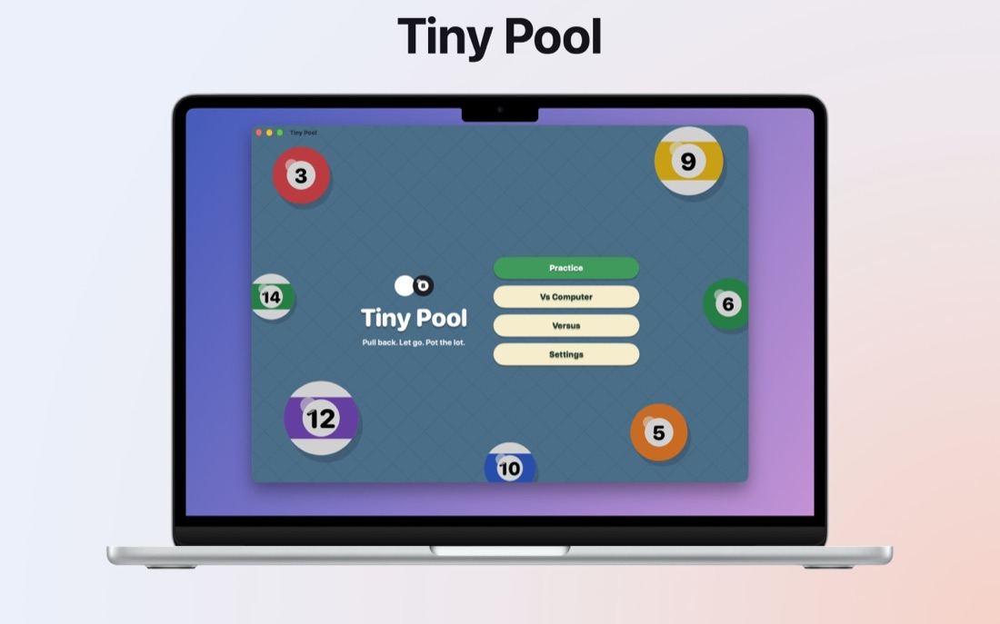
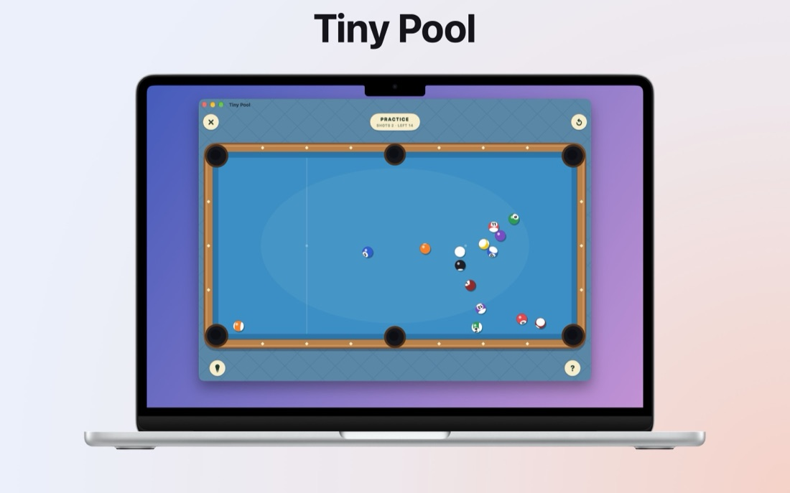

Pull back, let go
Drag away from the ball. A ring around the cue ball fills as the shot gets harder, and the cue draws back to match. Let go to shoot.
Quick games · Easy to learn
Pull back. Let go. Pot the lot.
Tiny Pool is a friendly top-down pool game for short breaks. Practise on your own, take on the computer, or share one screen with friends. It has no ads and nothing to buy.
Free · No ads · Works offline
Pull back anywhere on the screen, watch the power ring fill, and let go. That's the whole control scheme.
Pot Points, Classic 8-Ball, 9-Ball and a 60-second Timed game, each with a rule book one tap away.
Up to four players can shoot at the same time on one screen, each with a cue ball of their own colour.
How it works
No menus to learn and no clutter. Pull back to aim, and the shot goes the other way, like a slingshot.
Drag away from the ball. A ring around the cue ball fills as the shot gets harder, and the cue draws back to match. Let go to shoot.
See where the cue ball will hit, and where the balls head afterwards. Not in the mood? Switch the hint off with one tap and it stays off, in every game.
Balls roll and spin, so numbers and stripes turn as they travel. They bounce off the cushions and drop into the pockets.
Three levels: Beginner aims wildly, Intermediate picks sensible shots, and Expert tries its shots out first and rarely misses.
Two to four players, one device. In Pot Points and Timed everyone shoots at once. In 8-Ball and 9-Ball you take turns.
Every game has a short, plain-English rule book. Tap the ? when you're choosing a game, or during play.
Green, blue, red or purple cloth, chosen in Settings.
Cue strikes, clacks, cushions and pockets, all made inside the app. Sound and haptics each have a switch.
The table scales to fill iPhone, iPad and Mac, upright or sideways, and keeps its buttons clear of notches and rounded corners.
Choose your game
Start with the simplest and work your way up to the real thing.
Any ball goes. Every ball is a point and the black 8 is worth three. Clear the table and the highest score wins. Alone, clear it in as few shots as you can.
Solids or stripes: the first ball you pot picks your group. Clear your balls, then pot the 8. Fouls give your opponent ball in hand, so they can place the cue ball anywhere.
Always hit the lowest number first, and a gold ring marks which ball that is. Pot the 9 on a clean shot to win, even off another ball.
Sixty seconds on the clock, starting with your first shot. Pot as many as you can, and when the table is clear a fresh rack appears.
A look inside
The same game on iPhone, iPad and Mac, with the table scaled to fit each screen.






Simple by design
Tiny Pool is made for a few quick minutes at a time. There's nothing to sign up for, nothing to buy, and nothing that gets in the way.
Free, with no ads and no purchases.
For iPhone, iPad and Mac (iOS 18, iPadOS 18, macOS 15 or later).